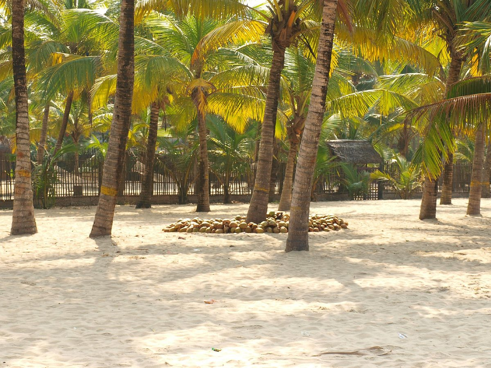
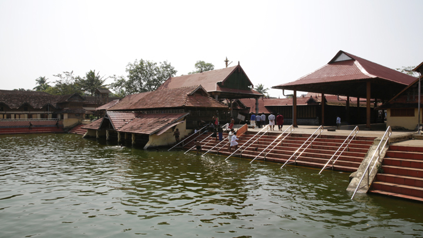
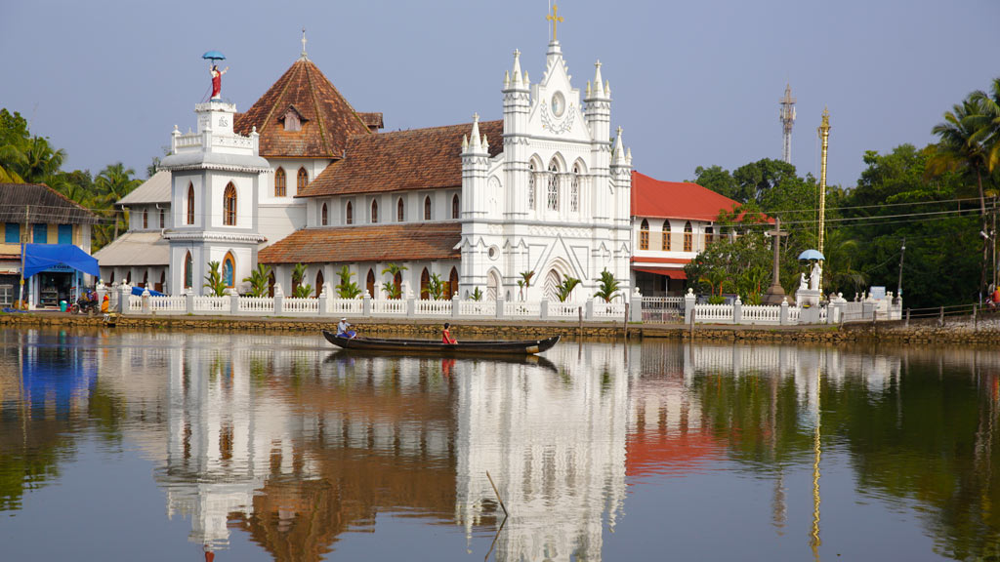

Top 5 places to visit in Alappuzha
Mararikulam
Keeping an identity of its own among beachside resorts in Kerala is the Marari Beach Resort of CGH Earth. Located on a palm-fringed beach in Alappuzha, the very setting of this resort blends well with the dwellings of the fishing community in the vicinity. The hallmark of this hotel, a winner of the Kerala Tourism award in the category of best three-star hotel, is the unique beach holiday experience that it offers to its guests.
Marari Beach may look like an endless vista of sand and surf, but it is much more than that. An authentic experience of the world of Kerala's traditional fishing villages, and a re-creation of an ancient, harmonious way of life awaits visitors here. As the promoters 'CGH Earth' claim - the Marari Beach Resort is a celebration of Kerala's coastal fishing villages. Inspired by this ancient way of life, the concept and functional style of this resort tries to capture its essence and create a new experience in leisure holidays.
Sprawling over 55 acres of lawns with lotus ponds and coconut groves, the Marari Beach Resort is for those who would really love to enjoy a long and leisurely stay; marked by a gentle and slow pace of life and being part of the cultural vibes of a fishing village

Vembanad Lake
The vast array of rivers and canals that Kottayam is blessed with, empty themselves into the picturesque Vembanad Lake. It is a lovely place to go for a picnic and has also turned into a prominent backwater destination. There are many boating, fishing and sightseeing options available in the area. The Kumarakom Tourist Village has many house boating and holiday packages available. Onam brings new life to these waters with stunning Snake Boat Races. As oarsmen in large numbers dictate the rhythm of the water underneath, one is transported to a new dimension altogether.

Stay In Houseboat
Have you ever gone cruising in a houseboat on the backwaters of Kerala? If you haven't, make sure you do. This is easily one amongst the most remarkable and unique experiences that our state has to offer.
Present day houseboats are huge, slow moving exotic barges used for leisure trips, and are in fact a reworked version of the Kettuvallams of olden times. The original Kettuvallams were used to carry tons of rice and spices. A standard Kettuvallam can hold up to 30 tons of goods from Kuttanad to the Kochi port.
In Malayalam language Kettu refers to ‘dwelling structures’ ‘Vallam’ means boat. These are boats with a thatched roof cover over wooden hulls. The boat is made of planks of jack-wood joined together with coir. This is then coated with a caustic black resin made from boiled cashew kernels. With careful maintenance, a Kettuvallam can last for generations.
A portion of the Kettuvallam was covered with bamboo and coir to serve as a restroom and kitchen for the crew. Meals were cooked onboard and supplemented with freshly cooked fish from the backwaters.
When modern trucks replaced this system of transport, people came up with a new way that would keep these boats, almost all of which were more than 100 years old, in the market. By constructing special rooms to accommodate travellers, these boats cruised forward from near-extinction to enjoy their present popularity.
Today these are a familiar sight on the backwaters and in Alappuzha alone, there are as many as 500 houseboats.
While converting kettuvallams into houseboats, care is taken to use only natural products. Bamboo mats, sticks and wood of the areca nut tree are used for roofing, coir mats and wooden planks for the flooring and wood of coconut trees and coir for beds. Nowadays, Solar panels are preferred for lighting.
Today, the houseboats boast of the same comforts of a good hotel including furnished bedrooms, modern toilets, cozy living rooms, a kitchen and even a balcony for angling. Parts of the curved roof of wood or plaited palm leaves open out to provide shade and allow uninterrupted views. While most boats are poled by local oarsmen, some are powered by a 40 HP engine. Boat-trains - formed by joining two or more houseboats together are also used by large groups of sightseers.

Ambalappuzha Sreekrishna Temple
Built in the typical Kerala architectural style, Ambalappuzha Sree Krishna Temple is dedicated to Lord Krishna. The temple is famous all over India for the Pal Payasam, a daily offering of deliciously sweet milk porridge. The temple is also noted for the performance of Pallipaana performed every 12 years by Velans (sorcerers).
The temple also has a majestic display of paintings depicting the ten avatars of Lord Vishnu (Dasavatharam). Devotees are also reminded that is here that the first performance of the legendary Ottanthullal, a powerful satirical folk art that comments on various socio-political issues, was first performed.

St.Mary's Forane Church
Resting on the banks of river Pamba, St. Mary’s Forane Church in Alappuzha district boasts of a brilliant architecture, elaborate rock inscriptions and ancient artifacts, revealing the influence of Portuguese culture. Believed to have been constructed in 427 CE, Champakulam Kalloorkadu Marth Maryam Basilica is one of the oldest Syrian Catholic churches in India and comes under the Archdiocese of Changanacherry. Serene backwaters and swaying coconut palms dotting the banks offer an endearing environment to the church. The Champakulam church has an open-air rock cross dating to CE1151
